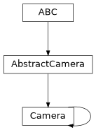

Camera#
- class esis.optics.Camera(sensor=None, gain=None, bits_adc=16, timedelta_exposure=<Quantity 10. s>, timedelta_exposure_min=<Quantity 2. s>, timedelta_exposure_max=<Quantity 600. s>, timedelta_exposure_step=<Quantity 100. ms>, timedelta_transfer=<Quantity 50. ms>, timedelta_readout=<Quantity 1.1 s>, timedelta_sync=<Quantity 0. s>, channel='', channel_trigger=0)[source]#
Bases:
CameraA model of the cameras developed by MSFC.
Attributes
The number of bits supported by the analog-to-digital converter
Human-readable name of each channel of this camera array.
The master channel which triggers the other channels to start exposing.
The conversion factor between electrons and ADC counts.
A model of the sensor used by this camera to capture light.
Represent this object as an
optikasurface.The current exposure length.
The maximum exposure length supported by this camera
The minimum exposure length supported by this camera.
The smallest possible change in exposure length supported by this camera.
The time required to perform a readout operation.
The synchronization error between the different channels.
The time required to transfer the exposed pixels into the storage region.
Methods
__init__([sensor, gain, bits_adc, ...])calibrate_temperature_adc_1(value)Convert the ADC 1 temperature from counts to physical units.
Convert the ADC 2, 3, or 4 temperature from counts to physical units.
calibrate_temperature_fpga(value)Convert the FPGA temperature from counts to physical units.
calibrate_timedelta_exposure(value)Convert the exposure time from counts to physical units.
calibrate_voltage_fpga(value)Convert the FPGA voltage from counts to physical units.
Inheritance Diagram
- Parameters:
sensor (None | Sensor)
gain (None | Quantity | AbstractScalar)
bits_adc (int)
timedelta_exposure (Quantity)
timedelta_exposure_min (Quantity)
timedelta_exposure_max (Quantity)
timedelta_exposure_step (Quantity)
timedelta_transfer (Quantity)
timedelta_readout (Quantity)
timedelta_sync (Quantity)
channel (str | AbstractScalar)
channel_trigger (int)
- classmethod calibrate_temperature_adc_1(value)#
Convert the ADC 1 temperature from counts to physical units.
- classmethod calibrate_temperature_adc_234(value)#
Convert the ADC 2, 3, or 4 temperature from counts to physical units.
- classmethod calibrate_temperature_fpga(value)#
Convert the FPGA temperature from counts to physical units.
- classmethod calibrate_timedelta_exposure(value)#
Convert the exposure time from counts to physical units.
- classmethod calibrate_voltage_fpga(value)#
Convert the FPGA voltage from counts to physical units.
- channel: str | AbstractScalar = ''#
Human-readable name of each channel of this camera array.
- gain: None | Quantity | AbstractScalar = None#
The conversion factor between electrons and ADC counts.
- sensor: None | Sensor = None#
A model of the sensor used by this camera to capture light.
If
None(the default),esis.optics.Sensor()will be used.
- property surface: AbstractImagingSensor#
Represent this object as an
optikasurface.
- timedelta_exposure_max: Quantity = <Quantity 600. s>#
The maximum exposure length supported by this camera
- timedelta_exposure_min: Quantity = <Quantity 2. s>#
The minimum exposure length supported by this camera.
- timedelta_exposure_step: Quantity = <Quantity 100. ms>#
The smallest possible change in exposure length supported by this camera.